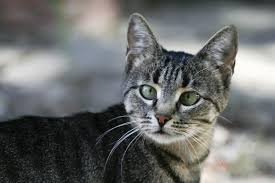

Yo nunca he tenido una mascota, pero siempre he soñado con la idea de tener un gato. Siempre me imaginaba el mismo tipo de gato, uno gris con manchas negras, el qual se llamaba Hermes. Este nombre sale obviamente del dios griego del mensaje, ya que es un tema que siempre me ha llamado la atención y este es mi dios favorito. Mi hermano piensa igual que yo, y creo que poco a poco estamos convenciendo a mis padres, asi que quien sabe, a lo mejor lo terminamos de convencer para este año. Igualmente, aunque no consiga un gato en casa de mis padres, estoy muy seguro de que, si me voy a vivir solo, adoptaré a uno, y si puede ser que se parezca lo más posible a Hermes.
